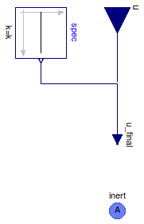

Table of Contents
- User's Guide
- BCs
- Sensors
- Assemblies
- Regions
- Subregions
- Connectors
- Characteristics
- Units
- Quantities
- BaseClasses
Download
- Latest: FCSys-2.0.zip (**Please check back soon or contact kdavies4 at gmail.com.)

| Name | Description |
|---|---|
| Prescribed temperature | |
| Prescribed heat flow rate | |
| Base classes (not for direct use) |
 FCSys.BCs.InertAmagat.Thermal.Temperature
FCSys.BCs.InertAmagat.Thermal.Temperature
| Type | Name | Default | Description |
|---|---|---|---|
| Boolean | internal | true | Use internal specification |
| BCType | bCType | BaseClasses.BCType.Temperature | Type of BC |
| Axes with linear momentum included | |||
| Boolean | inclLinX | true | X |
| Boolean | inclLinY | false | Y |
| Boolean | inclLinZ | false | Z |
| Type | Name | Description |
|---|---|---|
| InertAmagat | inert | Connector for linear momentum and heat, with additivity of volume |
model Temperature "Prescribed temperature" extends BaseClasses.PartialBC( final bCType=BaseClasses.BCType.Temperature, u(final unit="l2.m/(N.T2)", displayUnit="K"), spec(k(start=298.15*U.K))); equation inert.T = u_final;end Temperature;
FCSys.BCs.InertAmagat.Thermal.HeatFlowRate
| Type | Name | Default | Description |
|---|---|---|---|
| Boolean | internal | true | Use internal specification |
| Constant | spec | redeclare Modelica.Blocks.So... | Internal specification |
| BCType | bCType | BaseClasses.BCType.HeatFlowR... | Type of BC |
| Axes with linear momentum included | |||
| Boolean | inclLinX | true | X |
| Boolean | inclLinY | false | Y |
| Boolean | inclLinZ | false | Z |
| Type | Name | Description |
|---|---|---|
| InertAmagat | inert | Connector for linear momentum and heat, with additivity of volume |
model HeatFlowRate "Prescribed heat flow rate" extends BaseClasses.PartialBC(final bCType=BaseClasses.BCType.HeatFlowRate, u( final unit="l2.m/T3")); equation inert.Qdot = u_final;end HeatFlowRate;